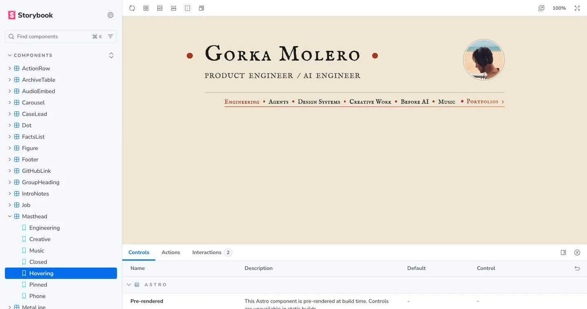
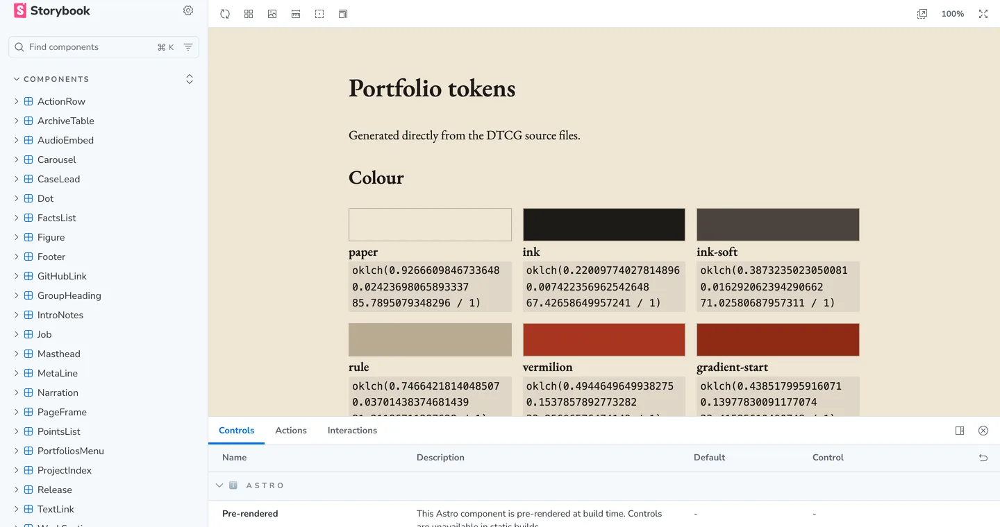
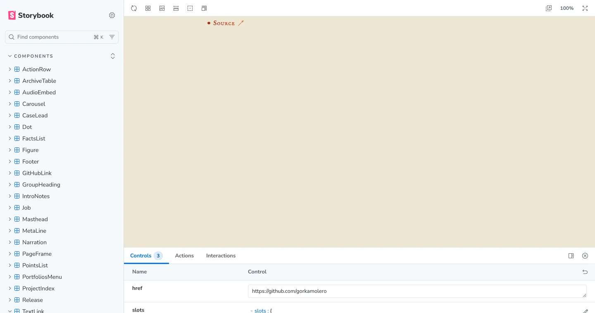

Chessable Edge
Chessable Edge was Chessable's design system and UI component library. We built it in React with Clutch, a visual builder for React, and published it to npm as @chessable/edge, with its core split into a package of its own. Three teams were using it in production.
The video is the guide for developers I made for the teams adopting it. It covers what Edge is, how Clutch works, how to get started, and where the system was going next: a shared process, a public roadmap and documentation generated with Storybook.
openroadie
openroadie's interface runs on @roadiehq/ui, a design system I co-led. It has about sixty components documented in Storybook, from forms, tables and drawers to the AI elements for agent conversations: messages, reasoning, tool calls and chain of thought. Its tokens cover color for light and dark themes, type, sizing, motion and z-index, and the code editor has a token set of its own.


Koda
Koda's interface runs on @koda/ui, the design system I built for it. It has forty components documented in Storybook, from buttons, dialogs and file trees to the parts of an agent session: tool calls, approval and question cards, the composer and the badge that shows who shared a session. Its tokens cover color for four themes, type, spacing, radius, motion and z-index, and a lint rule rejects hardcoded colors and sizes anywhere in the app. Every story also runs as a test in all four themes, with accessibility checks.


This portfolio
The site you're reading runs on its own design system. Its colours, sizes, spacing and timings live in 193 design tokens in the W3C format, and Terrazzo builds them into CSS variables and the Tailwind theme. Every page is composed from 23 Astro components, each documented in Storybook with its states, and a DESIGN.md sets out the rules for people and for AI agents.



Earlier
- BBVA CellsUI engineer on Cells, a hybrid component library and design system for BBVA's mobile apps, built on Polymer and web components and shown at Google I/O 2016. 2015–2016.
- William HillA hybrid component library and design system for the sportsbook redesign. I prototyped and built parts of it with the in-house designers. 2012–2014.